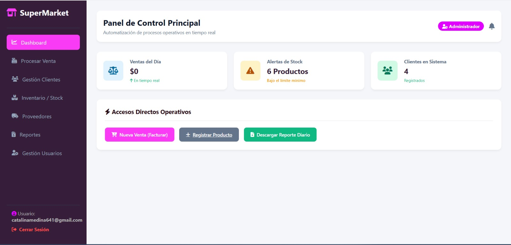

Catalina Medina
Estudiante de Ingeniería de Sistemas
Apasionada por la tecnología y por crear soluciones funcionales e innovadoras, con interés en análisis de datos, soporte al usuario y soporte técnico, siempre buscando aprender nuevas tecnologías y mejorar mis habilidades.
ContáctameTrayectoria y Formación
Ingeniería de Sistemas
Estudiante de 6to Semestre
Formación técnica centrada en la lógica de programación, administración de sistemas Linux y modelado de bases de datos SQL.
- SQL
- Linux
- JavaScript
Atención al Cliente y Ventas / Retail
Sector Comercio
Gestión de servicio al público, manejo de caja y resolución de dudas de usuarios. Estas habilidades me permiten ofrecer un soporte técnico con un enfoque humano y eficiente.
- Resolución de Conflictos
- Comunicación Asertiva
- Trabajo en Equipo
Proyectos Personales

Sistema de Gestión de Inventario y Ventas para Supermercado
Aplicación web para el control de inventario en tiempo real, facturación de productos y registro automatizado de ventas diarias. Desarrollado con una arquitectura relacional sólida en MySQL para garantizar el control de stock y backend en PHP para la gestión de accesos según el rol de usuario.
🔐 Credenciales de prueba para el Demo:
Administrador: catalinamedina641@gmail.com | Contraseña: 52133221
Empleado: sharon@gmail.com | Contraseña: 12345